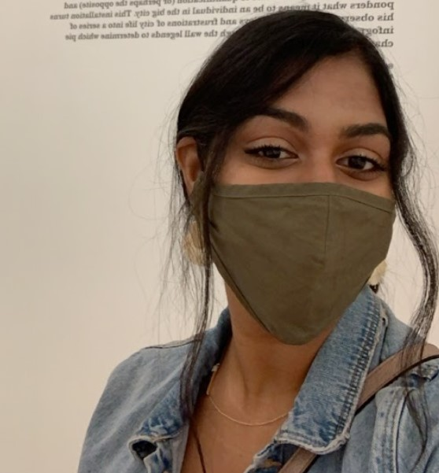

Top Pandemic Feelings
The world is crazy but we don't have to be.
By Belinda Vasquez Morales
How have you been feeling sad, mad and stressed this past year? You're not alone! So many things have happened that impact our ways of thinking and our emotions.
I’ve been feeling stressed and neutral most of the time, so it’s normal to feel different things. It also changes over time. Before “covid-19” I used to feel neutral, positive but now I'm feeling stressed most of the time.
Loneliness, sadness and extreme stress are very hard, but familiar to kids. What's new this year is a feeling that the world is going crazy. So many changes have happened over so little time. It’s been insane! One day we have something called “Covid-19” and the next day we have killer hornets. Crazy enough? Well, the next day we have aliens stopping by Earth!!
It’s hard to keep up with all of it at once. How do we keep our mental health when the world is going nuts?
One way is to know we are not alone in our feelings, to connect with each other, and care for each other. I created a survey to find out how other Lyceum students are doing, what has changed and how they are feeling. Here's what we are feeling:
Feeling Isolated
The pandemic has damaged mental health in almost everyone. From the beginning of the lockdown began, tweens and teens are having trouble sleeping, focusing and feeling connected to family and friends.
At Lyceum Prep currently many students agreed. Most students complained of loneliness and isolation. “I've been feeling lonely like I lost all my friends and stuff like that", wrote Minoshka. "I just felt like I had no one, really sad, upsetting, and depressed.”
So when you are feeling lonely, know that you are not alone: more than half of the other students here are with you, feeling the same! This is something to talk about when you connect to people.

Feeling Stressed Out
Have you ever felt stressed in school or at home? It’s hard not to. According to experts, stress is one of the most often felt feelings during the “Covid-19” Pandemic. I can absolutely agree with this, and so did many people at Lyceum.
Juliet is one. She said, “Most of the time I feel stressed and it's not just because of school, sometimes it's because of my personal life.” This is very true, stress doesn’t come only from school, it can come from anywhere!
And the pandemic is not helping us deal with either of them. Experts say we all feel stress from worrying about COVID-19, so everything else adds to that. An Eighth grader can agree to this! Here is why, “ I have an empty hole in my chest and no ability to do anything about it”.
But experts say there are things you can do when you are going through a hard time:
- Mediate and forget about what’s going on in the world!
- Listen to music!
- Remember that you’re not alone
- Going for walks and taking deep breaths!
- Play with your family members and try to have a good time together!
- Talk to someone
Feeling Happy
Happy is not how many people have been feeling. It’s hard to act happy when they are not feeling it, and this means we are not making each other smile. Less than a half of the people in the survey said they feel happy.
But that’s okay, we are all different which means we have different feelings as well. Even though we are all quarantined, everyone is feeling totally different things!
I was amazed to hear about people feeling very positive, like Yabriel Rodriguez is. He wrote: “During the pandemic I was feeling happy because I was able to play video games with my friends.” He isn’t lonely, which is great. It’s hard to make friends while being virtual! People who have friends right now are very lucky, and I hope they realize that and are grateful.
What Teachers are Feeling
If you think that teachers are strong and smart and healthy enough to deal with anything, pandemic included … you would be wrong. Students should care about teachers' thoughts and feelings too!. Here's how two of my favorite teachers have been coping.
Ms. Abhi
Ms. Abhi was not a fan of the pandemic. ”For me personally, I didn't like being virtual, honesty. It made me feel very isolated in my room. It was hard for me to not see my students in person everyday and it was difficult to get a hold of some students which can be really frustrating." But every cloud has a silver lining, and Ms. Abhi looks for the positive. She sees students learning how to deal with stress and isolation and frustration, particularly with technology: "I think students have been persevering! On the plus side, I think some students learned a lot of valuable computer skills that will help them in the future.”
Ms. Gale
Should we have stayed in school longer? Ms. Gale says no, even though it made her job as a Science teacher almost impossible: “My opinion would be that in order to remain safe and healthy I think closing schools in March of 2019 was the correct call. … With that being said, learning science online is nearly impossible, because it is driven by experimentation and engineering which we cannot do at all online."
Beyond her own work, Ms. Gale worries about how being isolated at home is keeping us from learning how to make friends and connect with new people. "It’s also scary to think about the lack of socialization that students have had this year...almost a year of isolation at home isn’t good for any let alone pre teens”
Student’s opinion
In the form, I asked students at lyceum if they liked school and if they had the choice to stay virtual would they do it?
Here are what they said:


We can say not many people enjoy virtual school, and I agree with that. In my opinion virtual school is stressful and less engaging than “normal” school.
Shadow said “I would want to stay remote because I don't really like communicating or getting in contact with a lot of people” On the other hand Juliet said, “I miss social interactions with people”.
Very different point of views, from liking to hating school.
Staying together!
Quarantine has changed our lives, made a big impact. Because of that we should be together, work as a community and get through this!
Feeling sad, depressed is very hard to go through, but we will make it out! If you need any help, tell an adult, teacher, parent or friend! It will help a lot, trust me.
Feeling happy and positive all the time is great. We should stay this way, but if we don’t always know there is someone there for you! Don’t let anything put you down.
Feeling different is okay, that’s what makes us special. We will make it out, quarantine isn’t going to stop us. That’s what life is all about, many challenges along the way!